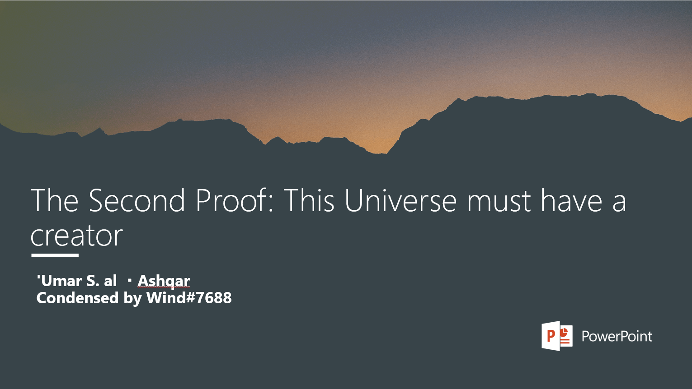

Name: The Second Proof: This Universe must have a creator
Description:
This is a powerpoint which presents the explanation that 'Umar S. al-Ashqar wrote in his book: "Belief in Allah" about the Qur'anic argument. This is an argument that all people with sound minds cannot reject but have to affirm.
It does not indulge in philosophy and uses a Qur'anic argument. It also deals with some contentions.
NOTE: There is also a voice overs version for people who prefer having audio with the text, excuse my poor english reading skills !
Jazakhallahu khairan, and may Allah reward u for your daw'ah !

second proof
Chance, Probability and Atheists
Description: Atheists often abuse the "chance" contention. So destroy them with how inconsistent in their logic they are.
This, is a great PDF. It doesn't indulge in philosophy, which is haram. So this is great for your studies and your understanding of atheism and their silly pseudo-scientific pretensions.
May Allah reward us for our efforts !
chance-probability-atheists.pdf
The Journey of Certainty
Description: Great series, where he refutes atheism and diverse scientific theories and contentions that atheists propose. A MUST WATCH
https://www.youtube.com/watch?v=NWrgayxJu0E&list=PLPqH38Ki1fy3EB-8xmShVqpbQw99Do2B-&ab_channel=Dr.EyadQunaibi-GlobalChanne
Some common Atheist questions and answers to them:
Why doesn't God just show us a sign?
Everything is a sign of God, your ability to think and reason is proof you were a creation. We don't look at a perfectly drawn painting and say, "I don't believe an artist made this". the same logic should be held to the intricate systems within the human body and the earths perfect placement within the universe. With reason we know that there is a source and intelligent design behind this
Why do I have to pray and fest etc, instead of just being a good person?
You should be a good person.
you also need to follow the truth
if being a good person comes from your own subjective belief of "good"
then who's to say your version of "good" is more valid than the other persons version
Why would a "merciful" God allow hardship and stress?
God is the Most Merciful, also the "All-Knowing".
We as children might resent going to the doctor, our parents love us so they take us there anyway. We think it's better if we don't go but our parents know better and take us there regardless. the same holds true with God. Anything that happens in this life either purifys us, teaches us, or strengthens us, never the opposite.
Why does an "All-Knowing" God have to test us? Shouldn't he know the results?
God is also just.
Imagine the judge sending you to prison without trial.
You have to actually experience it for yourself to understand why you're being rewarded/punished
God knows where we will end up but he is not at fault for our actions, we are. Free will exists.
Seeing is believing
if you can see God, He's probably not God.
God is infinite, so our finite eyes can't encompass God.
After all, you can't look at the sun without being blinded, and its only his creation.
The carpenter isn't inside of the desk and the painter isn't inside the painting, with logic and reason you conclude that the painting must have been painted and the desk must have been built, the same logic holds true to us.
i copied them from Psyph, may Allah reward him.
More on this point: "Why would a "merciful" God allow hardship and stress?"
Here's a refutation made by Mohammed Hijab, may Allah reward him... he refutes Neil deGrasse Tyson on "The Problem of Evil"
https://youtu.be/rn7n-gff-0c
I advise you all to check it out
Think this:
Fiction characters can't be a thing without a creator person.
They require an author, artist, musician, and more.
When fiction characters need this, how things greater than them(humans) are a thing without a creator?
People may think this: "How god is not created?"
Explanation: God was always here.
He didn't came from any place, he was here since eternity.
Fiction has flaws, but we don't.
We are flawlessly created.
1. We should be created because even fiction needs to be created.
2. We don't have flaws, so our creator should be far more complex than us. Even this makes God impossible to getting created.
Islam and atheism face to face by Dr.Haytham tal’at
https://d1.islamhouse.com/data/en/ih_books/single3/en-islam-vs-atheism.pdf
https://keystotheunseen.com/2017/11/24/the-existence-of-god/
https://keystotheunseen.com/2017/11/24/science-cannot-falsify-rational-necessity/
https://keystotheunseen.com/2018/06/28/out-of-nothing-versus-by-nothing/
https://keystotheunseen.com/2018/06/28/on-virtual-particles-and-nuclear-decay/
https://keystotheunseen.com/2018/01/04/do-we-need-to-prove-that-the-whole-world-is-emergent/
https://keystotheunseen.com/2017/11/24/beginninglessness-for-god/
https://keystotheunseen.com/2018/10/19/essential-identicality-of-bodies/
https://keystotheunseen.com/2017/11/23/is-rest-impossible/
”I agree that there’s a creator/necessary being, but how do we know that it’s specifically Allah?” answered
👇
https://www.basiraeducation.org/blog/how-do-we-know-that-the-necessary-being-is-the-god-of-islam
1:we’ve reached the present
2: an infinite past is impossible
3: the universe(or physical existence in general) started
4.The universe must have a cause
To prevent infinite regression of causes, cause if universe must be uncaused
The uncaused cause must exist outside of space time constraints to avoid an infinite regress
6.the uncaused cause is not physical(as it would then be within space time constraints)
7.The uncaused cause must have intelligence due to the universes fine tuning implying design
8.The uncaused cause must have extreme levels of power to create a universe with this much potential energy
9.The uncaused cause must have a will as our universe is one of possible existences and so one possibility had to have been selected over the others
10.Therefore the uncaused cause is God as these are the attributes and descriptions of God
Burden of proof is on one denying God, not believer of God, as God is a self-evident truth
E.g. if one says the past is not real, they must prove that, the burden of proof isn’t to prove the past is real, as they are making the claim that goes against the self evident truth.
Why God is a self-evident truth
There are 4 characteristics of self-evident truths
1.It is universal and not a product of a specific culture, they are cross cultural
2.It is untaught
It is natural, formed due to the natural functioning of the human psyche
4.Intuitive, the most easy and simple interpretation of the world
Belief in God is universal
So for point 1
People cross culturally believe in a God and most ppl are thiests and this has been case from beginning of recorded history
Should be noted that not every single person must believe in it for it to be self evident truth
Point 2: Belief in God is untaught
Underlying belief in a cause or creator based on our own reflections. Sociologists argue that athiest children stranded on a desert island would come to believe that something created the island. Athiests like to say Believing in God is like believing in a flying spaghetti monster, the idea that monsters or even spaghetti exists, requires information transfer
Point 3: Belief in God is natural
Research shows that people naturally believe in God. Such as one By Elisa Jarnefelt, Caitlin F.Canfield and Deborah Kelemen titles ‘The divided mind of a disbeliever: Intuitive beliefs about nature as purposefully created among different groups of non-religious adults’ concluded that there is a natural propensity to see nature as designed
Professor Justin Barett’s research in his book, ‘Born believers: the science of childres religious belief.’ He concluded children believed in what he calls ‘natural religion.’ This is the idea that there is a personal Being that created the entire universe. That Being cannot be human, it must be divine and supernatural
Point 4: Belief in God is intuitive
Existence of a creator is the most intuitive interpretation of the world
It is easy to understand without explicit instruction. Human beings have an affinity to attribute cause to things all the time, and the entire cosmos is one of those things, while not all intuitions are necessarily true, they should be disproven to make someone depart from their initial intuitions.
For example when someone perceives design and order in the universe, the intuitive conclusion is that there is a designer
Dependency argument
Imagine a domino fell, it is dependent upon another domino and so on, the first domino fall was dependent upon an external factor to fall be it someone pushing or the wind
So what is a dependent thing, well simply put this has 4 main criterion
1:not necessary does not need to exist
This is because the question arises, why does it exist
This is dependent upon external factors
2.requires something external/ is not self sufficient
3.something is dependent if it’s building blocks could have been arranged differently
This is because something external determined it’s arrangement. For example, flowers can be arranged to say the word ‘good’ there must be an external factor as to why it was arranged this way, in this case likely someone putting it there. The flowers could’ve been arranged differently to make a different word or arranged randomly by the wind, regardless, as it can be arranged differently, it depends on an external factor for its arrangement
4. has limited physical qualities
It could not have put limit itself, so an external factor limited it
The universe is dependent
As it can be arranged differently and has limited physical qualities
And so must depend on something
If it depends upon something dependent
That would need to depend on something
So eventually we need a necessary being
So a chair for example does not need to exist, it is dependent as external factors led to its existence aka the manufacturer
Common counter argument 1: The universe is necessary
It has building blocks that could have been arranged differently and limited physical qualities
Common counter argument 2: science will eventually find an answer
This isn’t a God of the gaps argument and a necessary being can’t be tested scientifically
Counter argument 3: smallest building block is necessary this isn’t sufficient as the universe itself is dependent and the arrangement of the smallest building block would still require an external factor
Argument from design
So athiests generally know that the earth is ridiculously well designed for life, but a common objection is, it’s just one planet, it could’ve been chance
The universe is, however, itself fine tuned for life:
The law of gravity- Gravity is the force of attraction between 2 masses. Without gravity, there would be no force to aggregate things. Therefore there would be no stars(and no planets). Without any stars there would not be any sustainable source of energy to facilitate life.
The electromagnetic force- this unique force affects everything within the universe. The electromagnetic force is responsible for giving things strength, shape and hardness. Without it, atoms would not exist, because nothing would keep electrons in orbit. With no atoms, there could not be any life. The electromagnetic force also causes chemical bonding by attracting charges. In absence of any chemical bonding, life could not exist.
The strong nuclear force- Since the nucleus is made up of positively charged protons, it should just fly apart, because like charged repel each other. However, the nucleus remains intact because of the strong nuclear force. If this were changed “the universe would most likely consist of a giant black hole.”
The weak nuclear force- The weak nuclear force is stronger than the force of gravity, but its strength is only effectual at extremely small distances. It is responsible for fuelling stars and the formation of elements. It is also responsible for radioactive decay. The sun would not be able to burn without ghis force, as it plays an important role in nuclear fusion. If this force were slightly stronger or weaker, stars would not formsomething is dependent if it’s building blocks could have been arranged differently
This is because something external determined it’s arrangement. For example, flowers can be arranged to say the word ‘good’ there must be an external factor as to why it was arranged this way, in this case likely someone putting it there. The flowers could’ve been arranged differently to make a different word or arranged randomly by the wind, regardless, as it can be arranged differently, it depends on an external factor for its arrangement
4. has limited physical qualities
It could not have put limit itself, so an external factor limited it
The universe is dependent
As it can be arranged differently and has limited physical qualities
And so must depend on something
If it depends upon something dependent
That would need to depend on something
So eventually we need a necessary being
So a chair for example does not need to exist, it is dependent as external factors led to its existence aka the manufacturer
Common counter argument 1: The universe is necessary
It has building blocks that could have been arranged differently and limited physical qualities
Common counter argument 2: science will eventually find an answer
This isn’t a God of the gaps argument and a necessary being can’t be tested scientifically
Counter argument 3: smallest building block is necessary this isn’t sufficient as the universe itself is dependent and the arrangement of the smallest building block would still require an external factor
Argument from design
So athiests generally know that the earth is ridiculously well designed for life, but a common objection is, it’s just one planet, it could’ve been chance
The universe is, however, itself fine tuned for life:
The law of gravity- Gravity is the force of attraction between 2 masses. Without gravity, there would be no force to aggregate things. Therefore there would be no stars(and no planets). Without any stars there would not be any sustainable source of energy to facilitate life.
The electromagnetic force- this unique force affects everything within the universe. The electromagnetic force is responsible for giving things strength, shape and hardness. Without it, atoms would not exist, because nothing would keep electrons in orbit. With no atoms, there could not be any life. The electromagnetic force also causes chemical bonding by attracting charges. In absence of any chemical bonding, life could not exist.
The strong nuclear force- Since the nucleus is made up of positively charged protons, it should just fly apart, because like charged repel each other. However, the nucleus remains intact because of the strong nuclear force. If this were changed “the universe would most likely consist of a giant black hole.”
The weak nuclear force- The weak nuclear force is stronger than the force of gravity, but its strength is only effectual at extremely small distances. It is responsible for fuelling stars and the formation of elements. It is also responsible for radioactive decay. The sun would not be able to burn without ghis force, as it plays an important role in nuclear fusion. If this force were slightly stronger or weaker, stars would not form